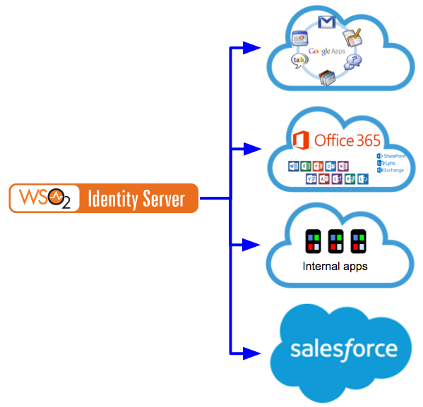

Identity Provisioning and its Standards¶
User and identity provisioning plays a key role in propagating users, user groups, and user identities across different systems and SaaS applications. Provisioning is the process of coordinating the creation of user accounts, e-mail authorizations in the form of rules and roles, and other tasks such as provisioning of resources associated with enabling new users.
This is particularly useful when adding new users into your organization. WSO2 Identity Server can ensure that provisioning is made easy. A provisioning request can be sent to the Identity Server to add a new user and this user is provisioned to various applications that are configured with the Identity Server. This process is illustrated in the following diagram.

Figure : User and identity provisioning using WSO2 Identity Server
Inbound and outbound provisioning¶
Inbound provisioning focuses on how to provision users, user groups, and user identities to the Identity Server. This can be done using the REST API available for SCIM. The following figure is an example of this process.

Figure : Inbound provisioning
Outbound provisioning involves provisioning users, user groups, and user identities to external systems or SaaS applications.

Figure : Outbound provisioning
Introducing SPML¶
Service Provisioning Markup Language (SPML) is an XML-based framework developed by OASIS for exchanging user, resource, and service provisioning information between cooperating organizations. The Service Provisioning Markup Language is the open standard for the integration and interoperation of service provisioning requests.
The goal of SPML is to allow organizations to securely and quickly set up user interfaces for Web services and applications, by letting enterprise platforms such as Web portals, application servers, and service centers generate provisioning requests within and across organizations. This can lead to automation of user or system access and entitlement rights to electronic services across diverse IT infrastructures, so that customers are not locked into proprietary solutions
Introducing SCIM¶
The System for Cross-domain Identity Management (SCIM) specification is designed to make managing user identities in cloud based applications and services, easier. User and identity provisioning is a key aspect of any identity management solution. In simple terms, it is to create, maintain, and delete user accounts and related identities in one or more systems or applications in response to business processes that are initiated either by humans directly or by automated tasks.
Today the enterprise solutions adopt products and services from multiple cloud providers in order to accomplish various business requirements. Hence, it is no longer sufficient to maintain user identities only in a corporate LDAP.
In most cases, SaaS providers also need dedicated user accounts created for the cloud service users, which raises the need of proper identity provisioning mechanisms to be in place. Currently, different cloud vendors expose non-standard provisioning APIs that make it a nightmare for the enterprises to develop and maintain proprietary connectors to integrate with multiple SaaS providers. For example, Google exposes the Google Provisioning API for provisioning user accounts in Google Apps Domain.
When enterprise IT systems consist of distributed, heterogeneous components from multiple vendors, and from both in-house and cloud, it is key to have an open standard that all agree upon in order to achieve interoperability and simplicity while getting rid of multiple connectors to perform the same thing.
SCIM is an emerging open standard that defines a comprehensive REST API, along with a platform neutral schema and a SAML binding to facilitate the user management operations across SaaS applications; placing specific emphasis on simplicity and interoperability.
Brief history of identity provisioning¶
Click here to read about the history of identity provisioning
The following diagram illustrates the progressive development that has taken place in the history of identity provisioning.

Figure : Provisioning evolution and history
The OASIS Technical Committee for Service Provisioning was formed in 2001 to define an XML-based framework for exchanging user, resource, and service provisioning information. As a result, the SPML (Service Provisioning Mark Language) came up in 2003 and was based on three proprietary provisioning standards by that time. IBM and Microsoft played a major role in building the SPML 1.0. The following are the three proprietary provisioning standards.
- Information Technology Markup Language (ITML)
- Active Digital Profile (ADPr)
- eXtensible Resource Provisioning Management (XRPM)
SPML 1.0 defined a Request/Response protocol as well as couple of bindings. Requests/Responses are all based on XML and each operation has it own schema.
One of the bindings defined in SPML 1.0 is the SOAP binding. It specifies how to transfer SPML requests and responses wrapped in a SOAP message. All the SPML operations supported by the provisioning entity should be declared in the WSDL file itself. The other one is file binding. This binding refers to using SPML elements in a file, typically for the purposes of bulk processing provisioning data and provisioning schema documentation.
In the closing stages of SPML 1.0, IBM and Microsoft felt strongly that support for complex XML objects needed to be done differently. The OASIS TC voted to postpone this effort until 2.0. As a result, IBM unofficially stated that they wouldn't be implementing 1.0 and would wait on the conclusion of the 2.0 process.
IBM and Microsoft, who were part of the initial SPML specification, went ahead and started building their own standard for provisioning via SOAP based services. This is called WS-Provisioning. WS-Provisioning describes the APIs and schemas necessary to facilitate interoperability between provisioning systems in a consistent manner using Web services. It includes operations for adding, modifying, deleting, and querying provisioning data. It also specifies a notification interface for subscribing to provisioning events. Provisioning data is described using XML and other types of schema. This facilitates the translation of data between different provisioning systems.
WS-Provisioning is part of the Service Oriented Architecture and has been submitted to the Organization for the Advancement of Structured Information Standards (OASIS) Provisioning Service Technical Committee.
OASIS PSTC took both SPML 1.0 and WS-Provisioning specification as inputs and developed SPML 2.0 in 2006.
SPML 1.0 has been called a slightly improved Directory Services Markup Language (DSML). SPML 2.0 defines an extensible protocol (through capabilities) with support for a DSML profile (SPMLv2 DSMLv2), as well as XML schema profiles. SPML 2.0 differentiates between the protocol and the data it carries.
SPML 1.0 defined file bindings and SOAP bindings that assumed the SPML1.0 Schema for DSML. The SPMLv2 DSMLv2 Profile provides a degree of backward compatibility with SPML 1.0. The DSMLv2 profile supports a schema model similar to that of SPML 1.0. The DSMLv2 Profile may be more convenient for applications that mainly access targets that are LDAP or X500 directory services. The XSD Profile may be more convenient for applications that mainly access targets that are Web services.
The SPML 2.0 protocol enables better interoperability between vendors, especially for the core capabilities (those found in 1.0). You can “extend” SPML 1.0 using ExtendedRequest, but there is no guidance about what those requests can be. SPML 2.0 defines a set of “standard capabilities” that allow you to add support in well-defined ways.
SPML definitely addressed the key objective of forming the OASIS PSTC in 2001. It solved the interoperability issues, however, it was too complex to implement. It was SOAP biased and was addressing too many concerns in provisioning than what actually was needed.
It was around 2009 - 2010 that people started to talk about the death of SPML.
In parallel to the criticisms against SPML - another standard known as SCIM (Simple Could Identity Management) started to emerge. This was around mid 2010 - and initiated by Salesforce, Ping Identity, Google and others. WSO2 joined the effort sometime in early 2011 and took part in all the interop events that have happened so far.
SCIM is purely RESTful. The initial version supported both JSON and XML. SCIM introduced a REST API for provisioning and also a core schema (which also can be extended) for provisioning objects. SCIM 1.1 was finalized in 2012 - and then it was donated to the IETF . Once in IETF, it changed the definition of SCIM to System for Cross-domain Identity Management and it supports only JSON and now XML.
As a result of the increasing pressure on OASIS PSTC, they started working on a REST binding for SPML, which is known as RESTPML , around 2011. This is still based on XML and not yet active so far.